Necesitamos crear unas variables:
- danyoAlEnemigo la ponemos protected int para poder usarla en el EnemigoMovil.cs y la ponemos SerializeField para poderla inicializar en el Editor de cada Prefab de cada Enemigo.
- vidaEnemigo será public float para poder inicializarlas en el Editor de cada Prefab de cada Enemigo. El EListo tendrá más vidas que el ETonto.
- maxVidaEnemigo es la maxima vida que tiene el Enemigo y la ponemos protected float para poder acceder desde los scripts EnemigoListo.cs y EnemigoTonto.cs.
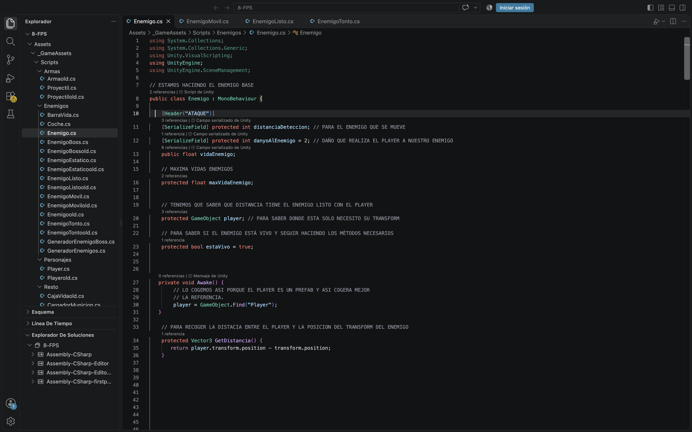
Recogemos en el Start() su variable maxVidaEnemigo las vidas del EnemigoListo.
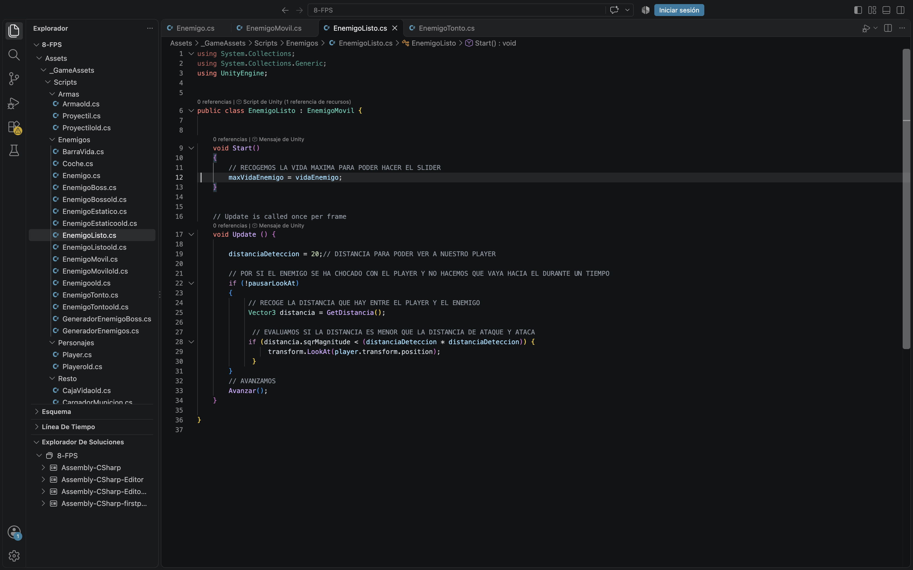
Recogemos en el Start() su variable maxVidaEnemigo las vidas del EnemigoTonto.
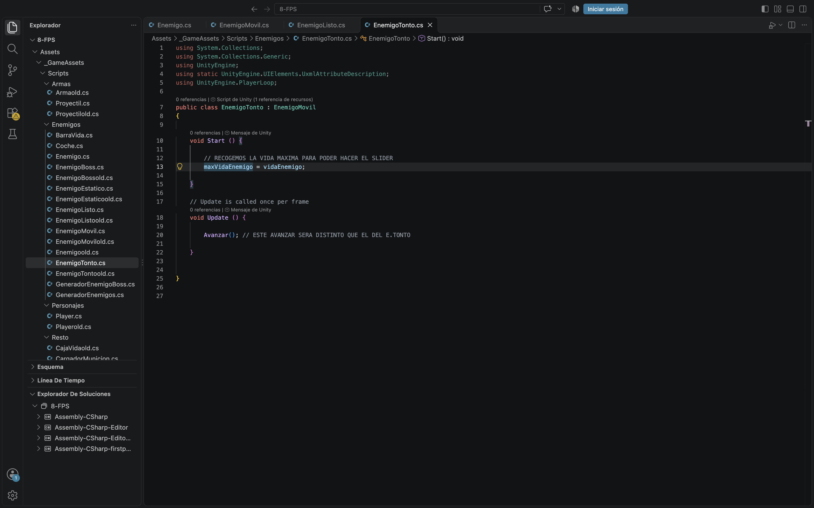
Nuevo Método RecibirDanyo(). Lo llamaremos desde OnCollisionEnter del EnemigoMovil.cs. Le pasamos dos parámetros:
- tipoEnemigo de tipo string será el tag que tenga el enemigo para saber de que tipo es Listo, Tonto.....
- danyo es de tipo int y es el danyo que le hace el Player al Enemigo.
Haremos lo siguiente:
- Quitamos a la vidaEnemigo el danyo que le hace el Player.
- Y si nos quedamos sin vida destruimos el Enemigo.
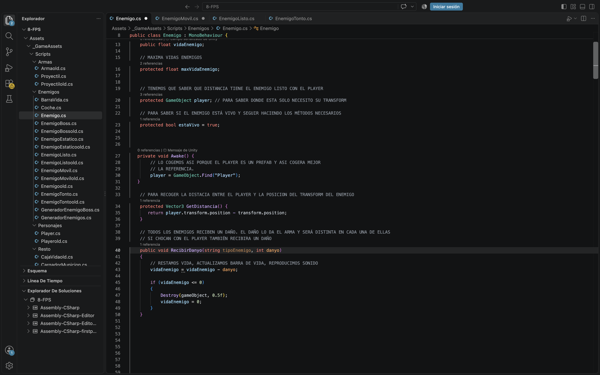
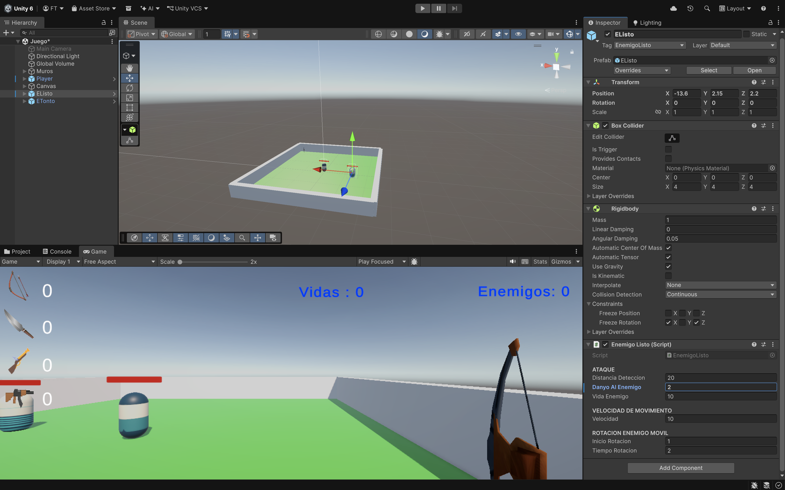
Añadir la llamada del Método RecibirDanyo() dentro del OnCollisionEnter() con los parámetros de con quien está colisionando con su tag y el daño que le hace el Player al Enemigo.
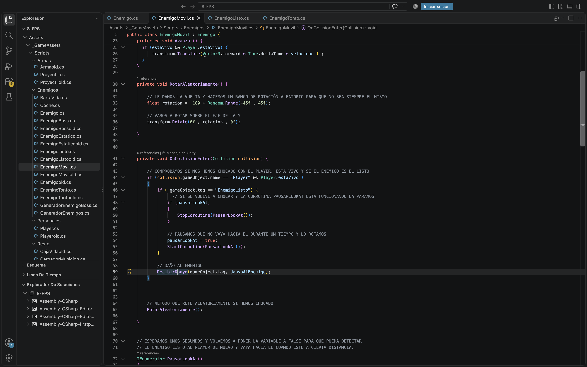
Este Script lo pondremos en la BarraVida de cada Prefab ETonto y EListo.
Una vez quitado las vidas de los Enemigos tendrémos que hacer que se refleje en la barra de vida que pusimos anteriormente. Asi que creamos un nuevo Script BarraVida.cs.
Variables:
- Slider slider.
- Camera camara. Para que el slider siempre este mirando hacia la cámara aunque el enemigo este avanzado en otra dirección.
- GameObject player que será SerializeField para que podamos arrastrar el Prefab desde el Editor.
Método Awake():
- Recoger la cámara del Player con GetChild(0). Lo que hace es recoger del Objeto FirstPersonCharacter (que es el hijo 0) el componente Camera.
- Y también recogemos el componente Slider del Enemigo.
Método Update():
- Rota el Slider a la rotación que tenga la cámara.
Método ActualizarBarraVida (valorActual, valorMaximo):
- Nuevo método que hara el cálculo para que se refleje en la barra la vida que tenga el Enemigo.
- Se inicializa el slider.value a valorActual/ValorMaximo.
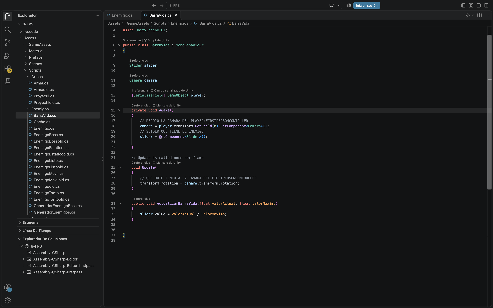
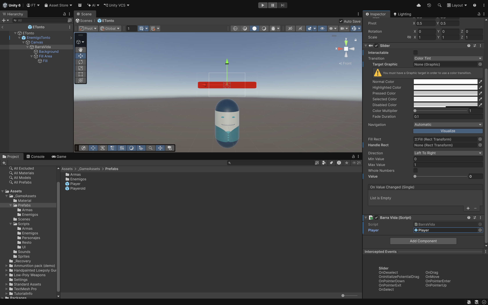
Nos faltaria hacer que el Enemigo cuando le quiten las vidas llamemos al Método ActualizarBarraVida.
Variables:
- BarraVida barraVida. Este es el Script que creamos anteriormente y asi podremos recoger el método.
Método Awake():
- Recoger el componente BarraVida y lo busca en cualquier hijo del Enemigo con GetComponentInChildren.
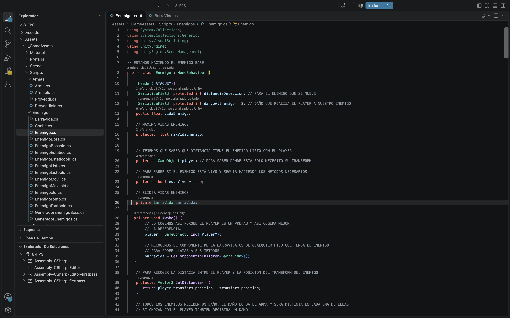
Método RecibirDanyo():
- Actualizar la Barra de Vida pasandole por parámetro la vidaEnemigo y maxVidaEnemigo.
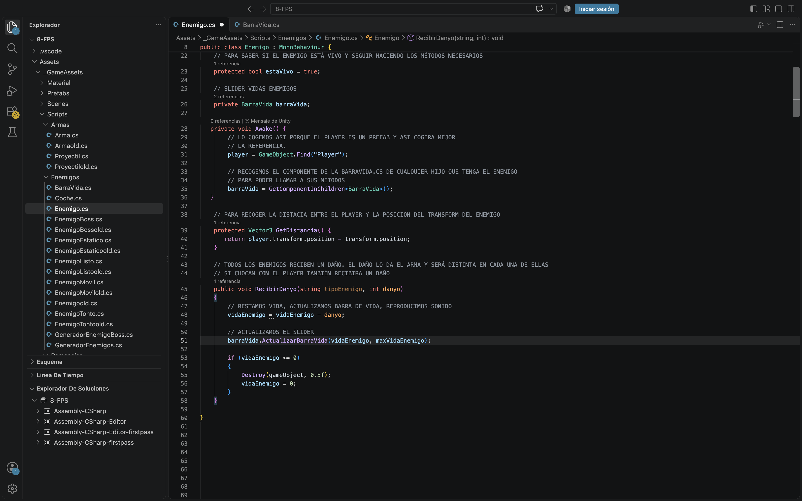
Método Morir():
- Cuando no tengamos más vidas llamamos a un nuevo Método Morir(). De momento solo destruimos al Enemigo. Más adelante tendremos que poner particulas, sonido...
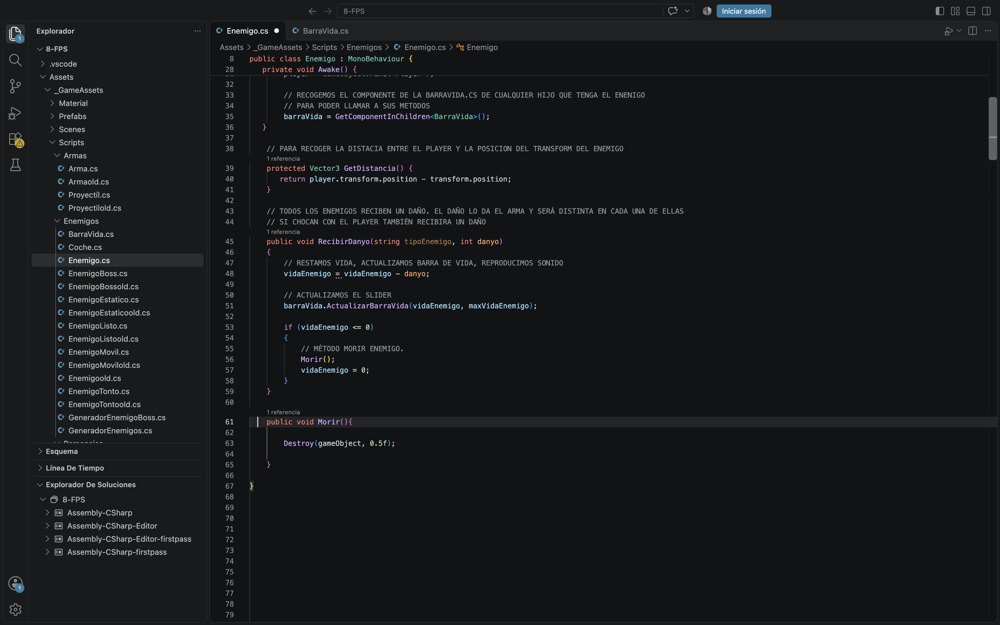